Línea azul = recorrido · puntos rojos = choques · verde = meta · rectángulo oscuro = ratón al final.
L estrecha 14 cm [actual]No llega · choques 44 · giros 22 · bucles 1
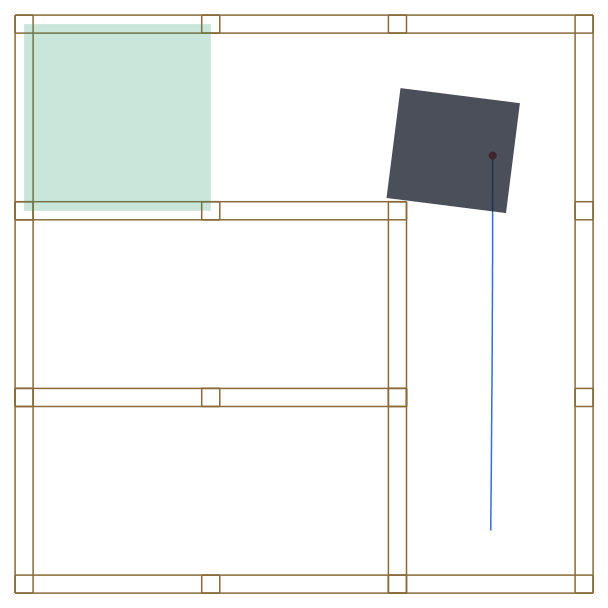
Cruce en T 14 cm [actual]No llega · choques 40 · giros 24 · bucles 1
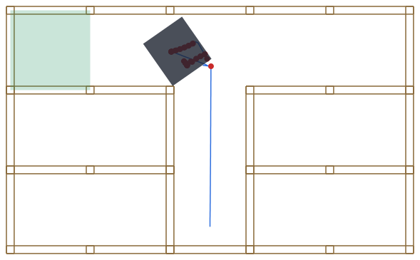
Callejon sin salida [actual]Llega en 20.6 s · choques 7 · giros 7 · bucles 0
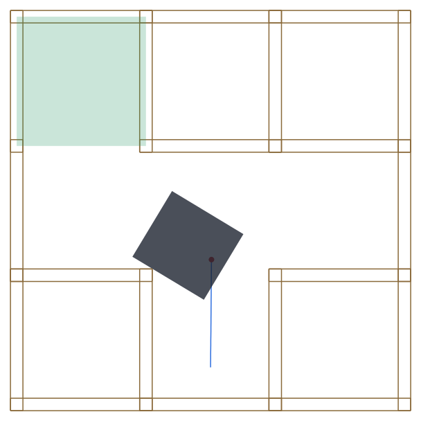
Pasillo ancho 22 cm, torcido 10° [actual]Llega en 9.5 s · choques 0 · giros 2 · bucles 0
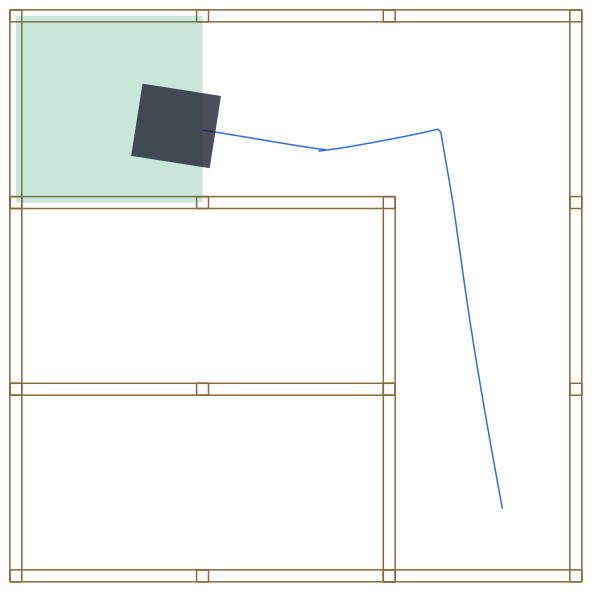
Ruido alto + 15% perdidas [actual]No llega · choques 39 · giros 23 · bucles 1
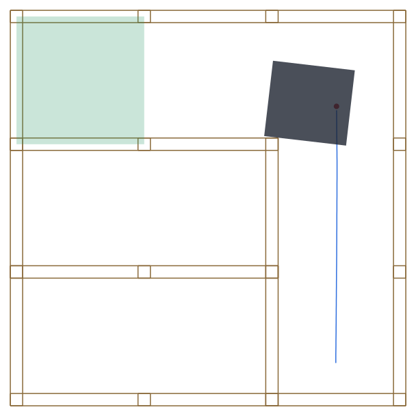
Laser izquierdo roto [actual]Llega en 9.9 s · choques 1 · giros 1 · bucles 0
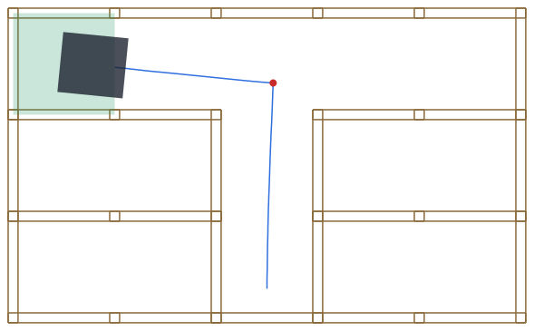
Rueda floja (deriva 6°/s) [actual]No llega · choques 44 · giros 25 · bucles 1
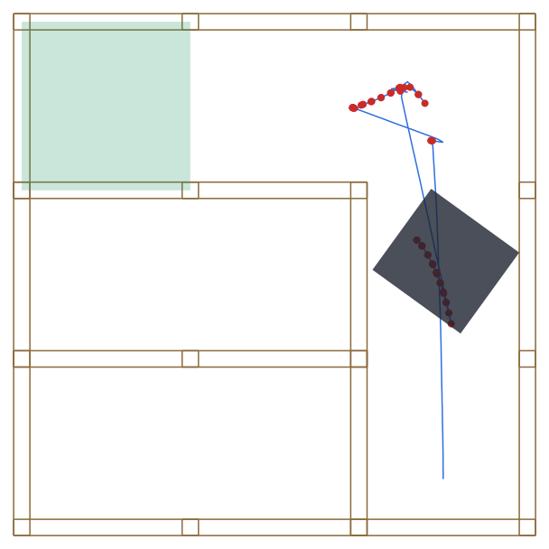
Mano a 8 cm durante 3 s [actual]No llega · choques 38 · giros 22 · bucles 1
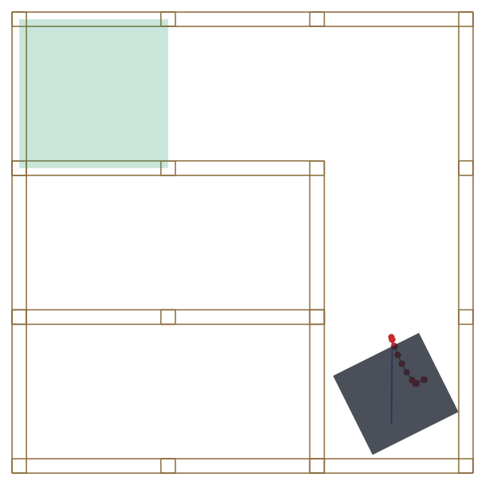
Laterales hundidos 15 mm [actual]Llega en 9.4 s · choques 1 · giros 1 · bucles 0
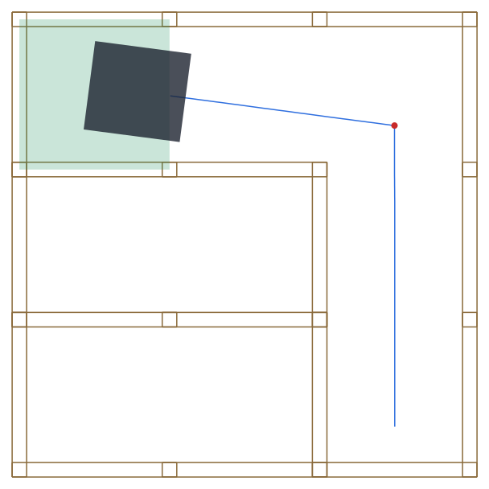
Eje de ruedas centrado [actual]Llega en 7.0 s · choques 0 · giros 1 · bucles 0
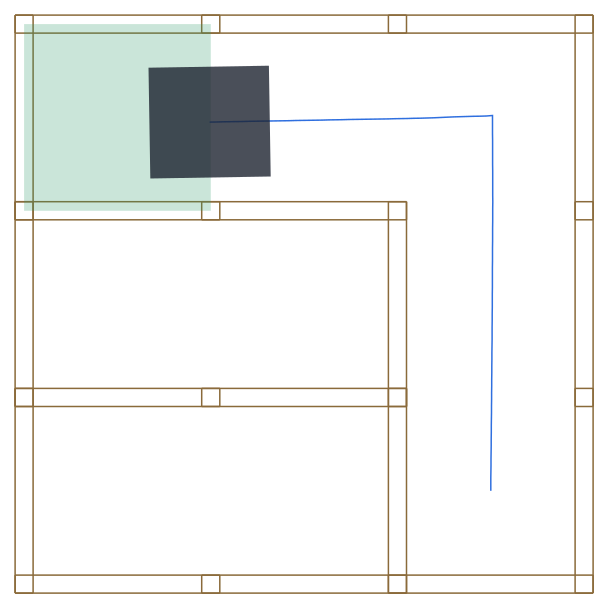
Laberinto reglamento, modo 1 [actual]No llega · choques 134 · giros 56 · bucles 0
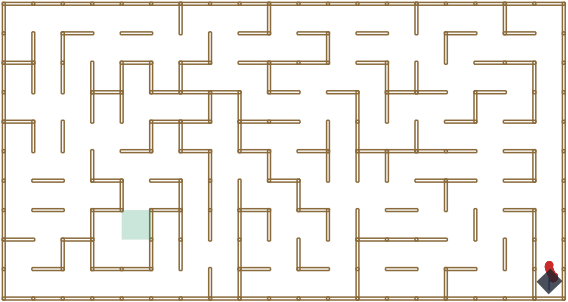
Laberinto reglamento, modo 5 [actual]No llega · choques 6 · giros 2 · bucles 0
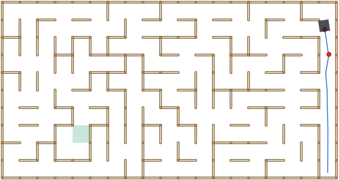
L estrecha 14 cm [dos tiempos]Llega en 7.5 s · choques 0 · giros 2 · bucles 0
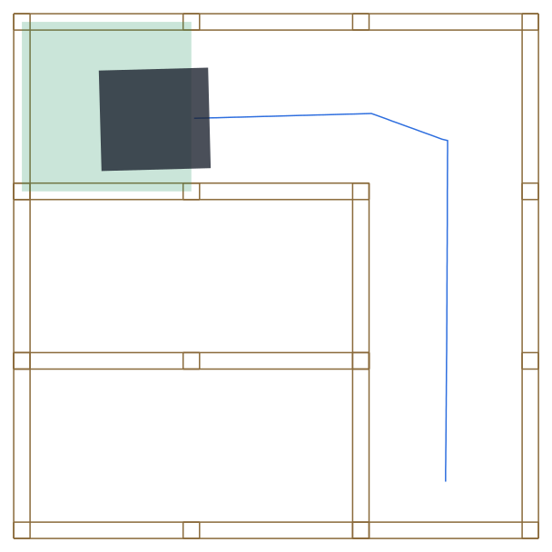
Cruce en T 14 cm [dos tiempos]Llega en 7.4 s · choques 0 · giros 2 · bucles 0
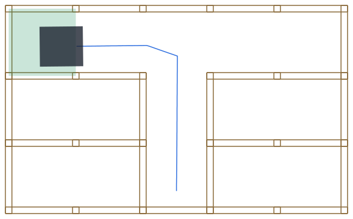
Callejon sin salida [dos tiempos]Llega en 6.4 s · choques 0 · giros 4 · bucles 0
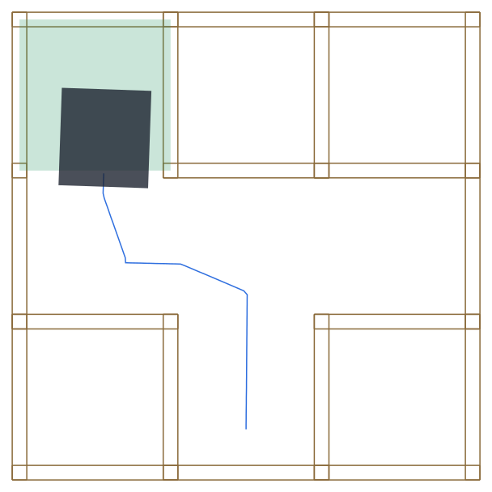
Pasillo ancho 22 cm, torcido 10° [dos tiempos]Llega en 8.7 s · choques 0 · giros 2 · bucles 0
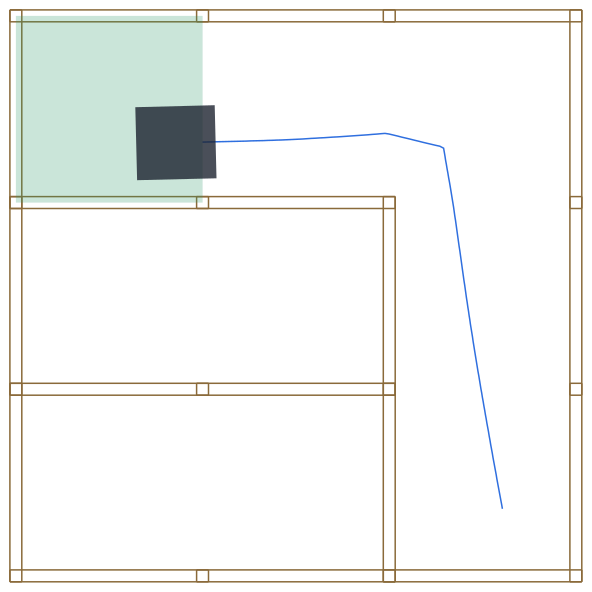
Ruido alto + 15% perdidas [dos tiempos]Llega en 8.2 s · choques 1 · giros 2 · bucles 0
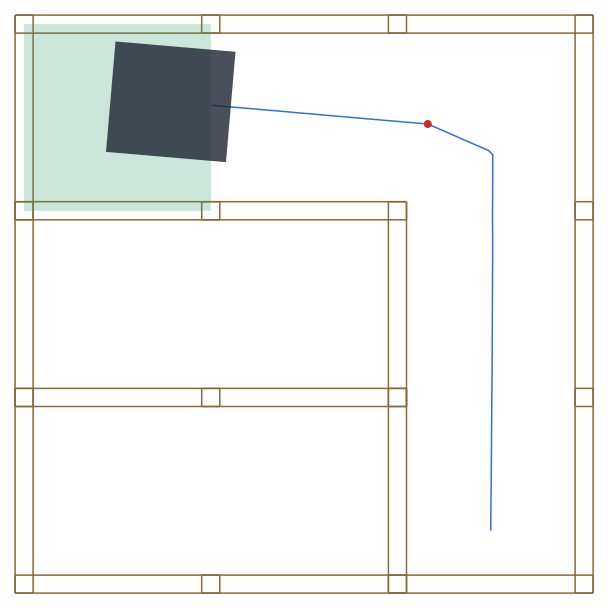
Laser izquierdo roto [dos tiempos]Llega en 8.4 s · choques 1 · giros 2 · bucles 0
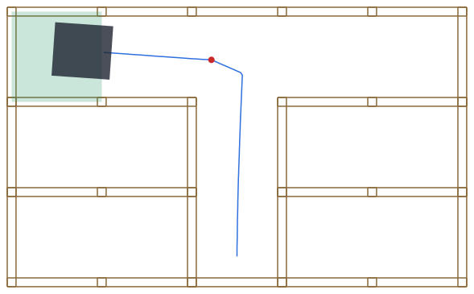
Rueda floja (deriva 6°/s) [dos tiempos]Llega en 7.2 s · choques 0 · giros 2 · bucles 0
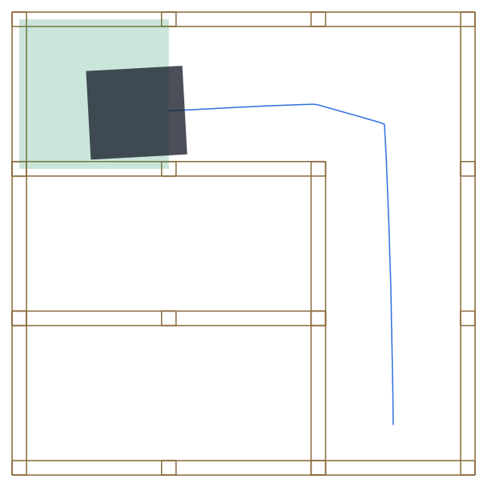
Mano a 8 cm durante 3 s [dos tiempos]Llega en 60.3 s · choques 13 · giros 12 · bucles 1
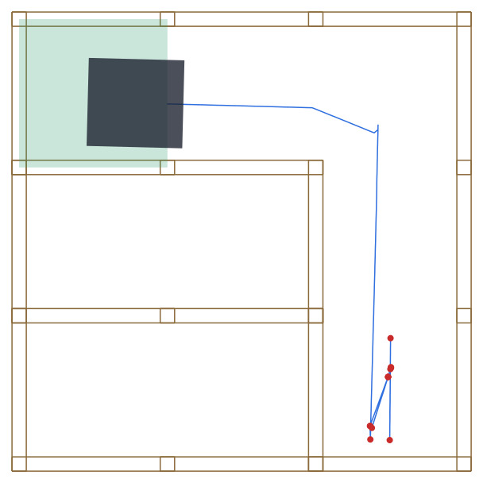
Laterales hundidos 15 mm [dos tiempos]Llega en 7.2 s · choques 0 · giros 2 · bucles 0
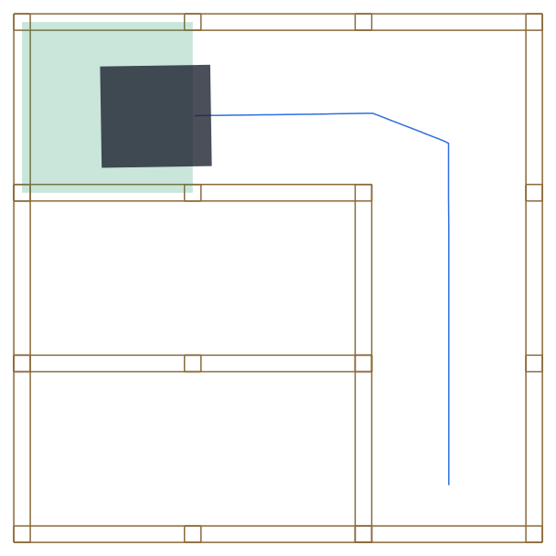
Eje de ruedas centrado [dos tiempos]
Llega en 7.8 s · choques 1 · giros 2 · bucles 0
Laberinto reglamento, modo 1 [dos tiempos]No llega · choques 73 · giros 41 · bucles 0
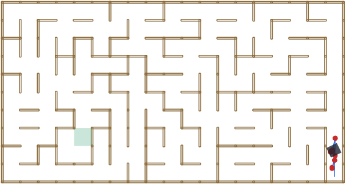
Laberinto reglamento, modo 5 [dos tiempos]No llega · choques 3 · giros 0 · bucles 0
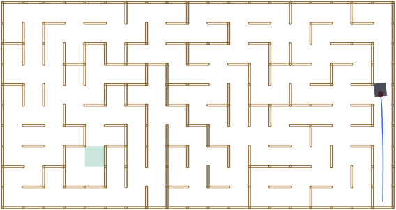